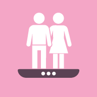

Theme:

Weight Goal Calculator
Calorie needs and a realistic timeline toward a weight goal. Works offline. Nothing you enter is sent or stored.
Step-by-step instructions
Prefer not to install? Use it in your browser — it's the same calculator.